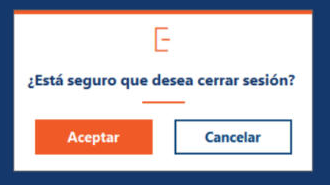

Inicio › Usuario › Cerrar sesión
Cerrar sesión
Termina tu sesión y te devuelve a la pantalla de ingreso. Hacelo siempre que dejes de usar el sistema o cuando otra persona vaya a usar la computadora.
Dónde está: Usuario › Cerrar sesiónLo usa: Todos los usuariosAtajo: F1
Pasá el mouse por encima de cualquier botón o campo de la pantalla para ver qué hace.

Qué hace cada elemento
- 1Pregunta de confirmaciónTe pregunta si estás seguro de querer cerrar sesión, para evitar que salgas por error.
- 2AceptarCierra tu sesión, cierra el menú principal y abre la pantalla de ingreso para que entre otra persona o vos mismo.
- 3CancelarTe quedás en el sistema, sin cerrar nada.
Cómo hacerlo
Para terminar de trabajar o cambiar de usuario.
- Guardá lo que estés haciendo en las otras pantallas.
- Abrí el menú Usuario y elegí Cerrar sesión.
- Tocá Aceptar.
- Vas a ver la pantalla de ingreso. Ya podés entrar con otro usuario o cerrar el programa.
Tené en cuenta: Si querés seguir trabajando, tocá Cancelar: no pasa nada.
Para saber más
Mensajes que puede mostrar el sistema 2
| Mensaje | Qué significa y qué hacer |
|---|---|
| Confirmación¿Está seguro que desea cerrar sesión? | Aceptar cierra la sesión; Cancelar te deja donde estabas. |
| ErrorError (con el motivo técnico) | No se pudo registrar el cierre de sesión en la base de datos. Igual vas a volver a la pantalla de ingreso. Avisale al administrador. |
Reglas a tener en cuenta 3
- Podés tener una sola sesión abierta por vez. Para entrar con otro usuario primero hay que cerrar la actual.
- Cerrar sesión cierra también el menú principal y todas las pantallas que tuvieras abiertas.
- El cierre de sesión queda registrado en la Bitácora de eventos.
Temas relacionados
SneakRush · Ayuda del sistema · Cerrar sesión. Podés abrir esta ayuda desde cualquier pantalla con la tecla F1.